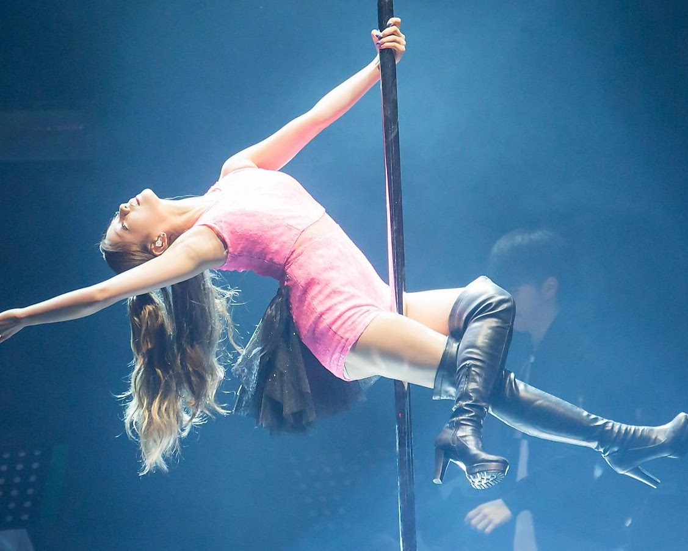

Studios • Fitness Classes • Bachelorette Parties • All Levels Welcome
Charleston's Pole Dance Scene
Pole dance fitness has quietly become one of the most popular group fitness and entertainment experiences in the Charleston, SC area — and for good reason. From dedicated pole fitness studios in Mount Pleasant to classes on Savannah Highway and downtown private party bookings, the Lowcountry has a thriving pole community that's welcoming, inclusive, and genuinely fun.
Whether you're here for a bachelorette weekend, looking for a full-body workout that doesn't feel like a workout, or searching for a supportive sisterhood to train with — Charleston's pole scene delivers all of it.

Studios Serving Charleston, Mount Pleasant & the Lowcountry
Voted Mount Pleasant's best dance studio, Inversions Pole Fitness at 716 S. Shelmore Blvd is the Holy City's top-rated studio for pole dance, lap dance, chair work, twerk, and burlesque. Founded in 2011 by Lisa Havens — a Master Trainer with the Pole Fitness Alliance — Inversions is the go-to destination for bachelorette pole parties, girls' nights, and ongoing classes for all levels.
Just 5 minutes from downtown Charleston and 10 minutes from Isle of Palms, the studio features club lighting, photo walls, and champagne service for private party bookings. Reviews consistently call it transformative.
716 S Shelmore Blvd · Mount PleasantAmorous Dance Pole and Fitness at 1706 Old Towne Road has been one of Charleston's most respected pole and aerial fitness studios for over a decade. ADPAF-certified instructors work with dancers of all fitness levels across pole, aerial, and specialty dance workshops. Their motto says it all: Where Confidence Meets Fitness.
Yelp consistently ranks Amorous among the top pole dancing class providers in the Charleston metro, with reviewers praising the supportive, all-accepting environment and effective instruction.
1706 Old Towne Rd · CharlestonDance Your Life Studio on Savannah Highway is founded by certified instructor Viktoriya Statska and offers pole dance, high heels choreography, twerk, floorwork, and stretching classes for all levels. The studio is gender-inclusive and designed around building confidence, strength, and flexibility in a welcoming space. ClassPass-bookable and open to absolute beginners.
Their heels flow and floorwork classes are a unique addition to Charleston's pole scene — perfect for anyone who wants the artistry side of the movement without jumping straight onto a pole.
1703 Savannah Hwy · CharlestonGoddess Dance Studio in Ladson, SC is known as one of the most community-driven pole studios in the Lowcountry. Beyond classes, the studio hosts paddleboarding trips, girls' nights, workshops, and events that have built a genuinely tight-knit sisterhood. Offerings include pole fitness, aerial hoop, and aerial silks — making it one of the more complete aerial arts studios in the Charleston area.
Reviews describe it as life-changing — especially for women who never expected to find this kind of confidence and community through a fitness class.
Ladson, SC · Greater Charleston AreaCharleston Pole Party at 84 N Market Street is the most centrally-located option for visitors and bachelorette groups on the downtown peninsula. Walk-in and private bookings bring the pole experience right into the heart of the tourist district. Tipsy Twerk rounds out the scene with a fun, low-pressure twerk-focused experience that's become a popular bachelorette party addition alongside pole classes for a full girls' night itinerary.
Both are consistently recommended on bachelorette planning blogs and local activity guides for Charleston weekend trips.
84 N Market St · Downtown CharlestonSweat, Seduction & Stilettos at 1703 Savannah Highway (843-695-7219) rounds out the Savannah Hwy corridor of Charleston pole and dance fitness studios. The name tells you everything: this is a confidence-first studio where heels, movement, and a little attitude are part of the curriculum. Yelp's latest Charleston pole rankings include them among the top options in the metro alongside Amorous and Inversions.
Great for groups, girls' nights, and anyone who wants their workout wrapped in a whole lot of energy.
1703 Savannah Hwy · CharlestonWhat Pole Dance Actually Does For You
Full-body resistance training disguised as dance. Builds upper body, core, and leg strength unlike conventional gym workouts.
Every studio in Charleston's pole community is built around this. Students consistently report improved self-esteem and body image that extends well beyond the studio.
Pole training dramatically improves flexibility and body awareness. Classes at studios like Dance Your Life specifically combine pole with stretching curricula.
The Charleston pole community — especially at studios like Goddess Dance — is built around genuine sisterhood, events, and collective celebration of progress.
Bachelorette Party Entertainment · Charleston SC
Charleston bachelorette pole parties are one of the most booked experiences in the city for a reason — they're equal parts workout, empowerment session, and absolute blast. Inversions Pole Fitness in Mount Pleasant is the top-rated option, offering private parties with club lighting, a photo wall, champagne, and instructors who make the whole group feel like pros by the end of the class. Charleston Pole Party downtown is the easiest walk-in option for groups staying on the peninsula.
Want to add a different kind of entertainment to the weekend? Michael at Your Place Charleston brings Las Vegas-style male entertainment directly to your vacation rental or venue — covering Isle of Palms, Folly Beach, Mount Pleasant, and downtown Charleston. Many bachelorette weekends combine a daytime pole class with an evening show for the full experience.
Book Inversions → Book Michael CHS →